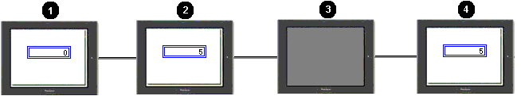

|
|
|
|
|
|
|
|
You can set up variables so that their values are stored in SRAM and are restored when the target powers up or restarts. The number of retentive variable values that can be stored are restricted by the amount of available SRAM. In the Target properties, you can check how much SRAM is available or used in the Retentive Variable property under SRAM Usage.

Retentive variable values are cleared every time a project is downloaded, as SRAM is cleared every time a new project is downloaded.
HMISTO and HMISTU targets do not have an internal battery and therefore cannot automatically store retentive variables. You can store retentive variables on the HMISTO and HMISTU targets by:
Saving retentive variables periodically to the simulated SRAM – every 10 seconds for HMISTU and hourly for HMISTO.
Performing an Exit Runtime operation before powering down the target.
The retentive variable option is available for all internal variables for these data types: INT, DINT, UINT, Integer, REAL, BOOL, STRING, Array elements, Structure elements, and folder elements. You cannot enable the retentive variable option for external variables, system variables, and recipe variables. Set up retentive variables using one of the following methods:
The Variable Property Inspector. Set the Retentive property to Enabled or Disabled. Set the Initial Value.
The Variable Properties dialog box. In the Data Details tab, select the Retentive checkbox and then set the Initial Value.
After you download the project with the Retentive property Enabled for a variable, the Initial Value that you set up for the internal variable is displayed on the target. When then target shuts down, the last value that you had set will be the value when the target restarts.

1. Initial value set up in the editor is used at project startup.
2. You can change the value during run time.
3. Target machine shuts down.
4. When the target restarts, the last value that was set before the target shutdown is displayed.